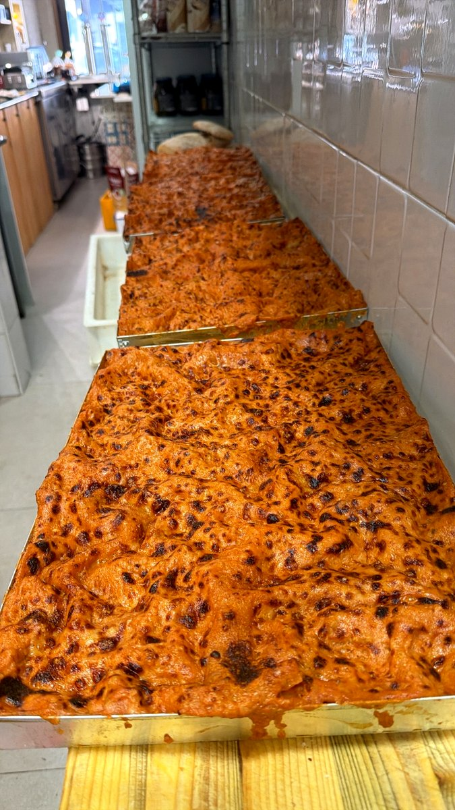
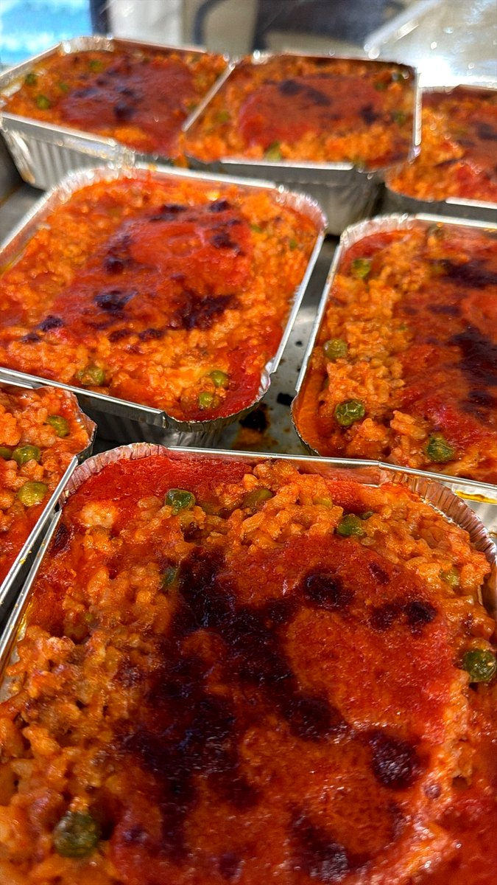
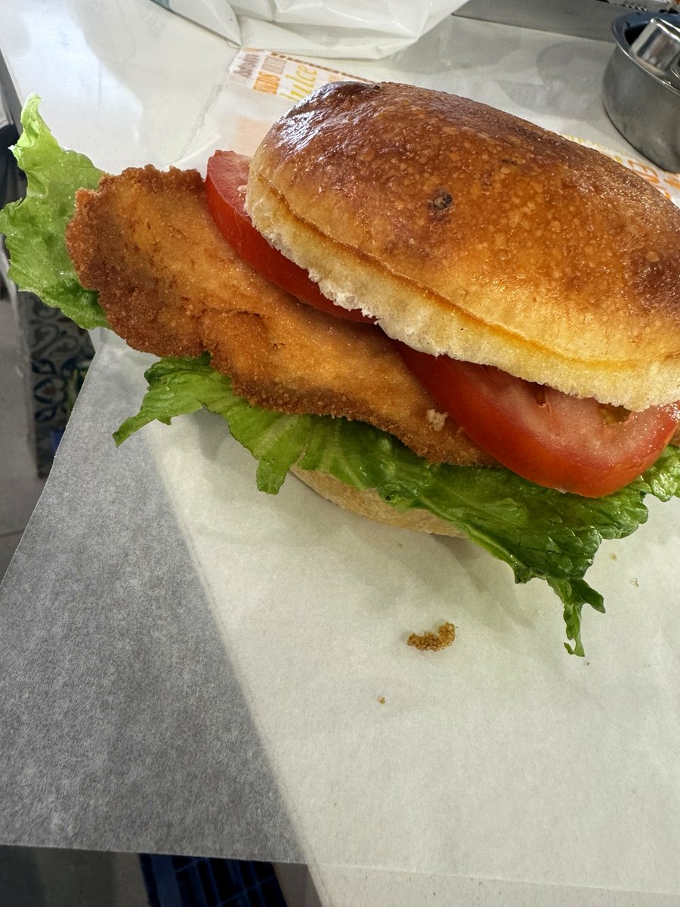
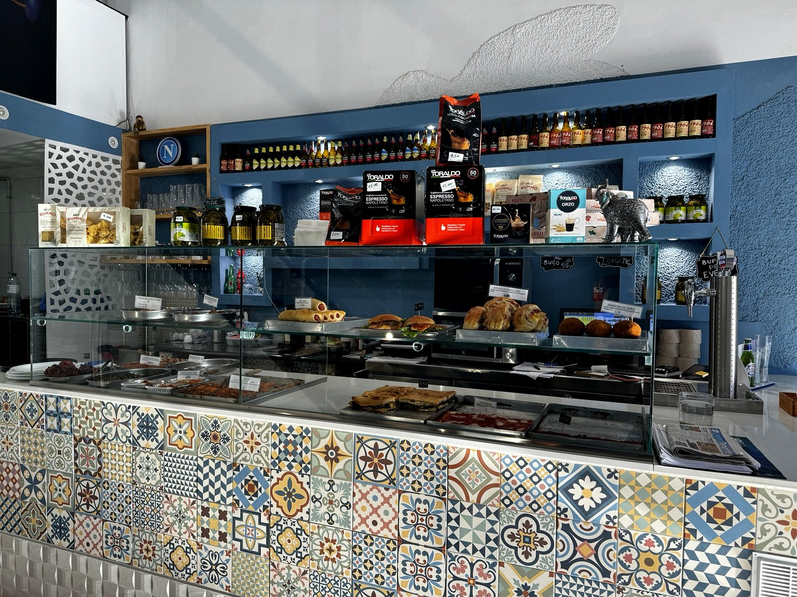
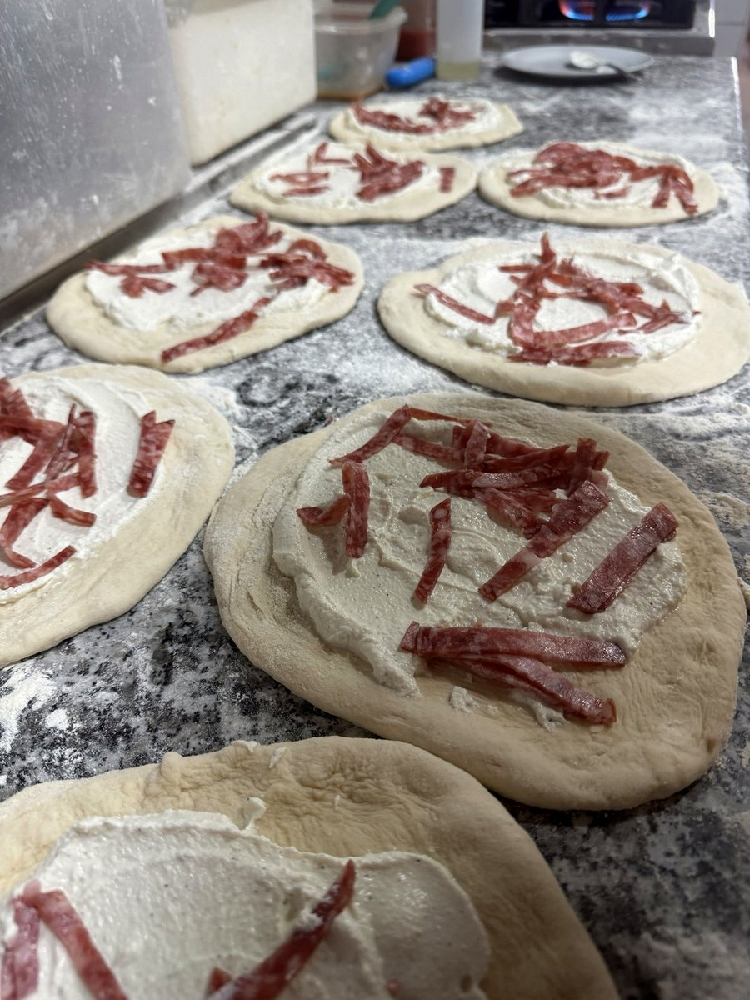
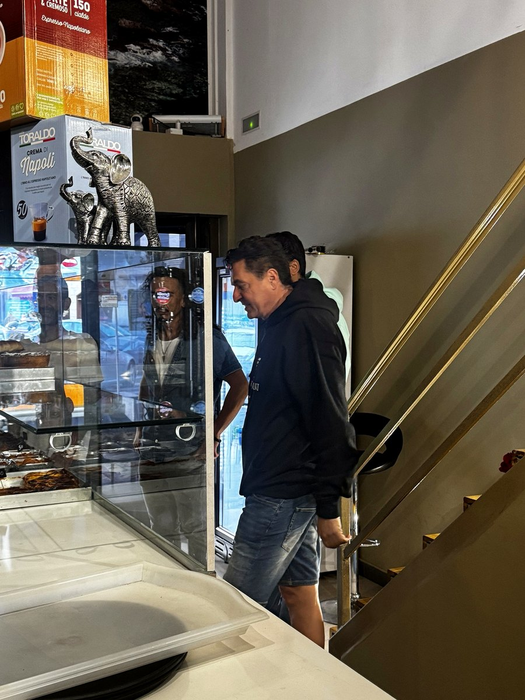
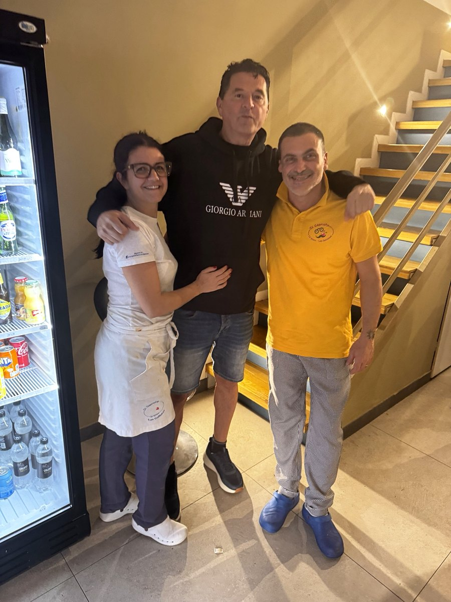
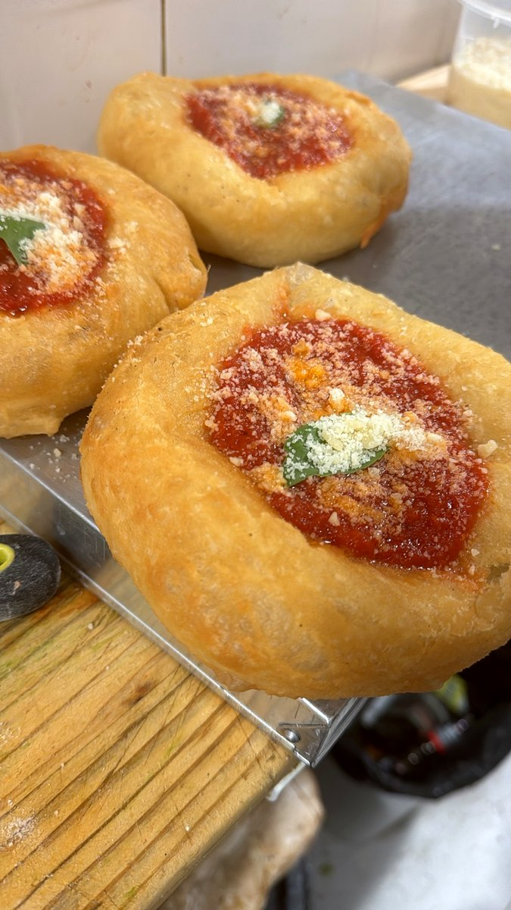

Pizza
Margherita, parigina, ripieni, salsiccia e friarielli.
Pizza • Pasta • Fritti
Rosticceria napoletana artigianale: pizza, fritti, primi piatti e specialità preparate ogni giorno con passione.
Rosticceria Napoletana
Da El Capricho trovi prodotti preparati ogni giorno: impasti, ripieni, fritti, piatti al forno e sapori della tradizione. Un angolo di Napoli nel cuore di Tenerife.
Specialità

Margherita, parigina, ripieni, salsiccia e friarielli.

Montanare, frittatine, arancini, crocchè e pizza fritta.

Lasagna, parmigiana, pasta e patate, polpette e contorni.
Feste e occasioni
Prepariamo buffet per compleanni, feste, riunioni e occasioni speciali: pizza, fritti, panini, piatti al forno e dolci.
Chiama ora
Galleria





Vieni a trovarci
EL CAPRICHO
Rosticceria Napoletana
Avenida Fernando Salazar Gonzalez 13A
38630 Las Galletas, Tenerife
☎ +34 922 731 223
rosticceriaitalianatenerife@gmail.com
Orari aggiornati su Google.